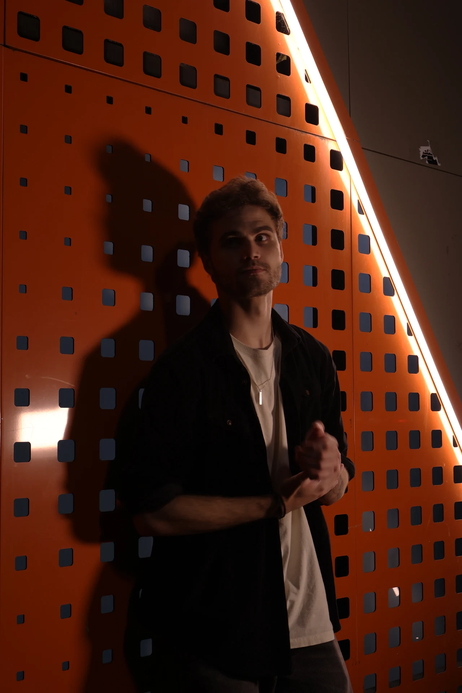

arthur-burigo.png

ESSE AI SOU EU
OLÁ, EU SOU
Arthur
Búrigo
ART DIRECTOR
Tenho 21 anos e, atualmente, estou concluindo meu primeiro bacharelado em Publicidade e Propaganda pela faculdade Cásper Líbero.
Desde pequeno a criação sempre levou minha cabeça aos lugares mais extraordinários que ela podia imaginar. Dessa forma, com o passar dos anos, tenho utilizado desses conhecimentos para atender de maneira estratégica o objetivo de empresas em transmitir suas mensagens através dessa paixão.